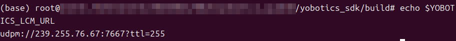
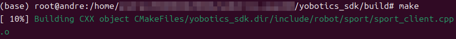
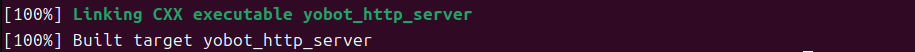

4.2 Build the SDK¶
Purpose¶
This section explains how to build yobotics_sdk/ and generate motion-control, state-reading, and HTTP-service example programs.
Prerequisites¶
- CMake, Make, GCC / G++ are installed.
- The system can find the LCM library.
- The current directory is the project root.
Build Steps¶
cd yobotics_sdk
mkdir -p build
cd build
cmake ..
make -j4
Generated Programs¶
Common programs after a successful build:
yobotics_sdk/build/yobot_sport_client
yobotics_sdk/build/yobot_robot_state_client
yobotics_sdk/build/yobot_http_server
Optional Environment Variable¶
The SDK uses the default LCM address by default. To specify one:
export YOBOTICS_LCM_URL="udpm://239.255.76.67:7667?ttl=255"
Use ttl=255 for cross-machine control. Keep the same URL across controller, simulation, SDK, and external algorithms.
Check the LCM environment variable:
echo $YOBOTICS_LCM_URL

Success Criteria¶
cmake ..finds LCM.

make -j4finishes without build errors.


build/containsyobot_sport_client,yobot_robot_state_client, andyobot_http_server.

Troubleshooting¶
| Symptom | Action |
|---|---|
| LCM not found | Install liblcm-dev or check the LCM installation path |
| Program runs but receives no state | Check whether the controller is running and whether the LCM URL matches |
| Cross-machine control fails | Check UDP multicast, firewall, and multicast routes |